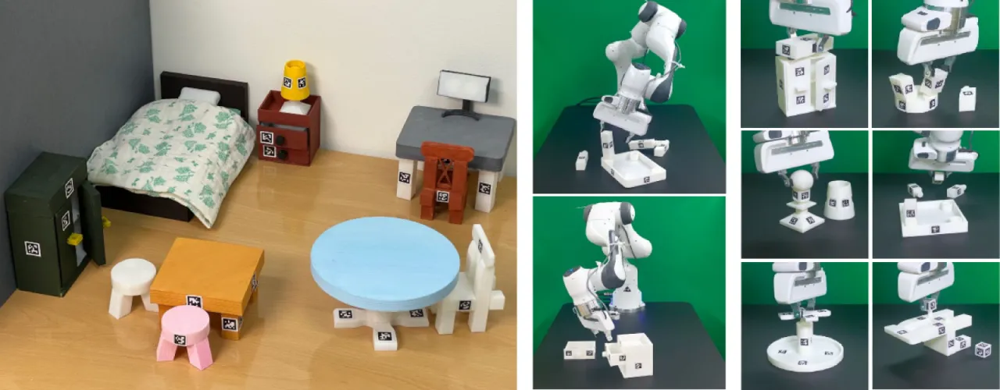
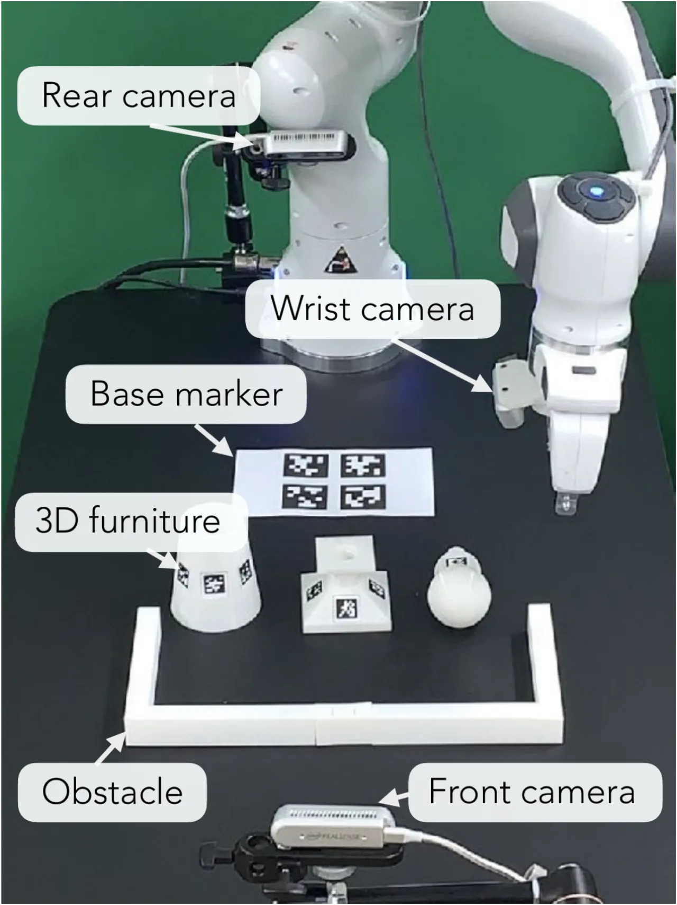
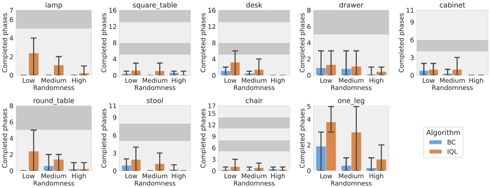
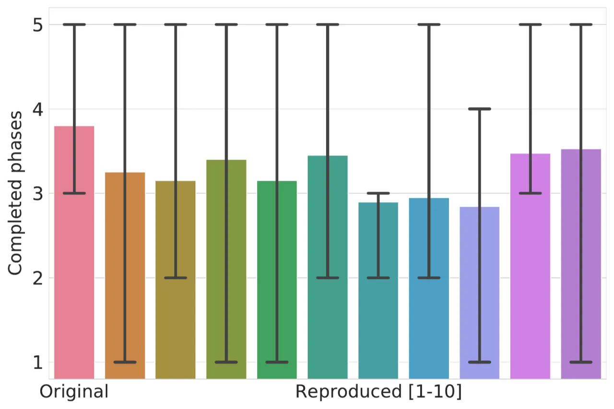

FurnitureBench 将家具组装作为长时域复杂机器人操作的下一个里程碑基准。它提供了 3D 可打印家具模型、超过 219.6 小时的遥操作演示数据（5000+ 条演示）、一键复现的机器人控制软件以及基于 Isaac Gym 的 FurnitureSim 模拟器，使任何实验室都能以标准化方式评估强化学习与模仿学习算法在真实世界中的表现。
现有真实世界机器人操作基准仅能评估推物、拾放等简单短时域任务。要让机器人真正胜任日常任务（整理房间、烹饪、组装家具），需要更具挑战性、可复现的长时域复杂操作基准。
"these approaches have been limited to learning simple behaviors in current real-world manipulation benchmarks, such as pushing or pick-and-place."

家具组装之所以是理想的基准任务，在于它同时要求：
FurnitureBench 围绕"可复现（reproducible）"与"易用（easy-to-use）"两大核心目标设计，涵盖真实世界机器人系统、标准化家具模型、演示数据集与模拟器四大模块。

机器人系统使用学术界广泛采用的硬件（Franka Panda + RealSense D435），家具零件全部经由 3D 打印制作——研究者只需下载模型文件即可在自己实验室复现完全相同的家具零件。绿色摄影背景与受控照明（色温 4600K–6000K，亮度 ≤4000 lm）进一步降低环境变量。任务初始化 GUI 工具引导用户将零件摆放至从预定分布采样的目标位姿，确保不同实验室的评测结果可比较。
作者使用 Oculus Quest 2 VR 控制器与键盘共同完成了 219.6 小时的成功演示采集，覆盖所有 8 种家具与 3 个随机化等级（low / medium / high）。单条演示约 300–3000 步，属于典型的长时域轨迹。
FurnitureSim 基于 Isaac Gym 与 Factory 构建，支持快速在线渲染与离线光线追踪渲染，与真实世界共享相同的 3D 家具模型与机器人控制器。模拟实验结果与真实世界结果呈正相关，可作为算法快速迭代的代理指标；但仍存在 sim-to-real domain gap，策略不能直接迁移。
基准评测分三部分：单技能基准（Single-Skill）、全装配基准（Full-Assembly）和模拟器基准（Simulation）。整体结论是：现有 IL 与离线 RL 算法在该基准上尚无法取得实质进展，特别是在"插接"和"螺旋固定"技能上。
| 技能 | BC (low) | IQL (low) | BC (med) | IQL (med) |
|---|---|---|---|---|
| Grasping 1 | 0% | 70% | 0% | 40% |
| Placing | 40% | 90% | 30% | 20% |
| Grasping 2 | 30% | 0% | 20% | 20% |
| Inserting | 0% | 20% | 0% | 0% |
| Screwing | 10% | 10% | 0% | 0% |
IQL 在 square_table 的 Screwing 技能（low randomness）达到 90% 成功率，而 Inserting 技能在所有家具上普遍为 0–20%，证明"精准对齐插接"是当前算法的主要瓶颈。

| 实验设置 | low randomness | medium randomness |
|---|---|---|
| Original（低随机化数据） | 3.8 | — |
| Original（中随机化数据） | 3.0 | 3.0 |
| Mixed data（混合数据） | 4.6 | 3.7 |
| Front camera only（无腕部摄像头） | 2.0 | 1.3 |
| No AprilTag | 3.1 | 2.4 |
| Random AprilTag | 3.4 | 2.7 |

"the 3D furniture models are still tailored to common robotic arms for research, e.g., all pieces have widths larger than 2 cm for easy grasping, which is larger than the tiny screws used in real-world IKEA furniture. Furthermore, our furniture models are much smaller in scale compared to the real-world furniture."尽管如此，作者认为基准仍涵盖大多数长时域操作挑战（temporal credit assignment、exploration、perception、dexterous manipulation）。
当前基准主要以单任务标准、单 Franka Panda 手臂评测。未来方向包括：多任务强化学习（利用不同家具类别的共享信息）、多臂/移动机器人协作，以提升操作灵巧性。
"system identification is very challenging. For example, the same torque command does not lead to the same robot trajectories in simulation and the real world due to inaccurate robot modeling (e.g., mass of each robot part, friction of joints)."视觉域与物理域均存在差异，直接 sim-to-real 策略迁移困难。作者将弥合该差距列为未来工作。